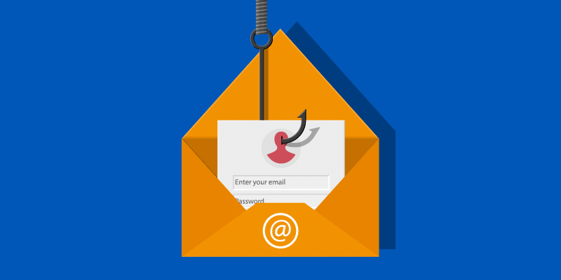
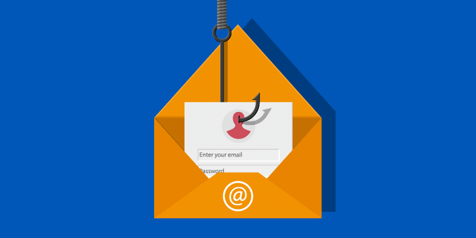
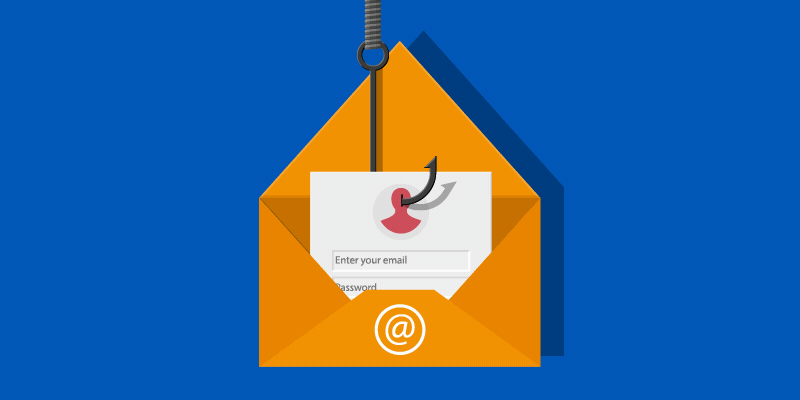
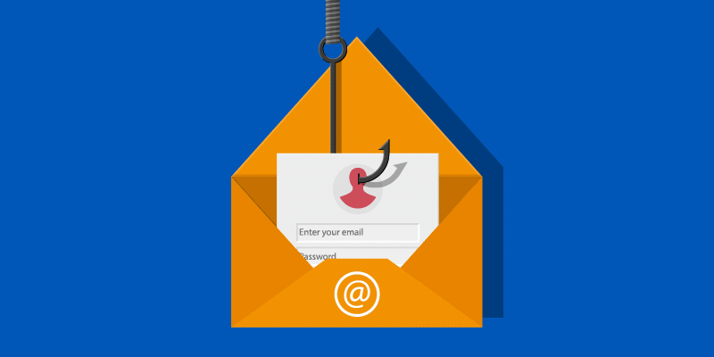

Diffrent security types
 



This type of security protects your computer network from attacks inside and outside of the network. It uses different techniques to prevent malicious software or other data breaches from occurring. Network security uses many different protocols to block attacks but also at the same time allow authorized user access to the secure network. One of the most important layers to secure your network is a firewall, which is a protective barrier between your network and external, untrusted network connections. A firewall can block and allow traffic to a network based on security settings. Phishing attacks are the most common form of cyberattack, so email security is the most important factor in creating a secure network.
Most of our online life is stored in the cloud and not in a hard drive. Most people use online systems such as Google Drive, Microsoft OneDrive, and Apple iCloud for storage. It is important for these platforms to remain secure at all times due to the massive amounts of data stored on them. To ensure appropriate cloud security measures are in place, you should consider the end-user interface, data storage security, backup plans, and human error that exposes the network.
Home Page->